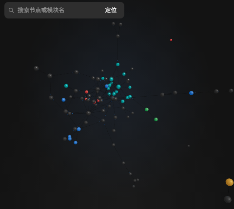

Open the loop.
Agent 不该是黑箱。
Dex AGENT 把 Agent 的插件结构、执行步骤与工具调用，变成可观察、可回放、可扩展的桌面工作台。
500 nodes图谱基准
3 views结构 · 过程 · 时间
local-first工作区留在本机

DEX AGENT / OBSERVE / 2026
STRUCTURE
先看清它
由什么构成。
3D 图谱把插件树映射成空间。节点是插件，边是依赖与调用，颜色与光环是状态。缩放、旋转、搜索、聚焦，布局不动，你看见的部分动了。
- NODE插件即节点。模型适配器、工具、Skill、调度器、沙箱。
- EDGE关系即边。inject 依赖与运行时调用。
- STATE状态是三重编码。颜色、光环、标签文字。

节点插件 / 状态
边依赖 / 调用
光环运行中 / 失败
运行中成功告警失败节点大小 = 活跃度
PROCESS
再看清它
做了什么。
一次任务被拆成 Turn、Step 与 Tool Call。执行流用 DAG 展开每一步的推理与工具调用；失败会沿依赖向上传播，点一下就能定位。
- STEP节点默认紧凑。序号、状态、一行推理摘要。
- TOOL工具调用是证据。工具名、入参、返回、耗时。
- FAIL失败有方向。变红，并向上传播到 Turn。
Turn 01检查构建脚本并给出修改建议
1 failed
STEP 01
读取构建配置read package.json
STEP 02
定位构建脚本grep electron.vite
STEP 03
修改配置edit defineConfig
STEP 04
运行检查失败test · exit 1
read · 118msgrep · 42msedit · 26mstest · failed
结构示意 · 非实时数据 / DAG layout by elkjs
TIME
时间可以
回退。
时间不是一条日志，而是一条可以回退的线。缓存历史事件，回退到任意 Step 查看当时上下文；支持回放。失败不是终点，是一个可以重新进入的位置。
- REWIND回到任意 Step。上下文、工具返回、推理文本都还原。
- REPLAY重新走一遍。时间线与 DAG 共用同一套事件。
RUN 01 / 00:00 — 01:02
00:00prompt
00:12step 01
00:31tool
00:48failed
00:57rewind
01:02done
playhead 00:00events 42steps 09

EXTEND
看得见，
也改得动。
插件热插拔、模型适配器切换、桥接层扩展。观测不是只读的仪表盘，而是你调整 Agent 的入口。
- PLUGIN能力以插件挂载。挂上、卸下、重组。
- BRIDGE桥接只做映射。不修改运行时核心。
- MODEL模型适配器热插拔。包含 OpenAI 兼容端点。
Cordis 插件运行时插件树 / 生命周期 / 事件
桥接层graph bridge / trace bridge · 只做映射
WebSocket增量推送 / 状态回放
Electron + React 观测层3D 图谱 / DAG / 时间线 / 详情面板
EVERYDAY
为每天
八小时设计。
高密度，但不拥挤。每个颜色、每段动效、每处留白，都要能回答它在表达什么。
500节点基准NODES
101本机基准 fpsLOCAL / 2026-10-30
3联动视角GRAPH / DAG / TIME
2主题DARK / LIGHT
性能数值来自 2026-10-30 本机开发环境基准，实际取决于硬件与场景。
- 01暗色 / 浅色双主题跟随系统或手动切换；同一套语义 token。
- 02布局与视角记忆面板宽度、折叠状态、图谱视角都会记住。
- 03键盘可达焦点可见，快捷键可查，状态可读。
- 04本地优先工作区与会话留在本机；只有模型调用离开。
- 05动效承载信息节点生长、边流光、失败传播，都对应真实状态。
- 06性能即体验500 节点、增量更新、LOD 降级与稳定引脚。